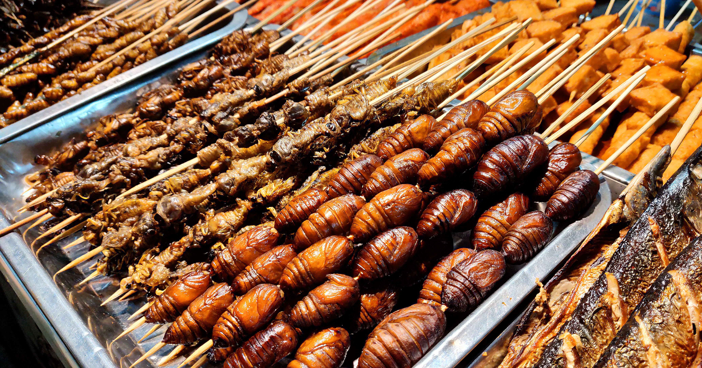
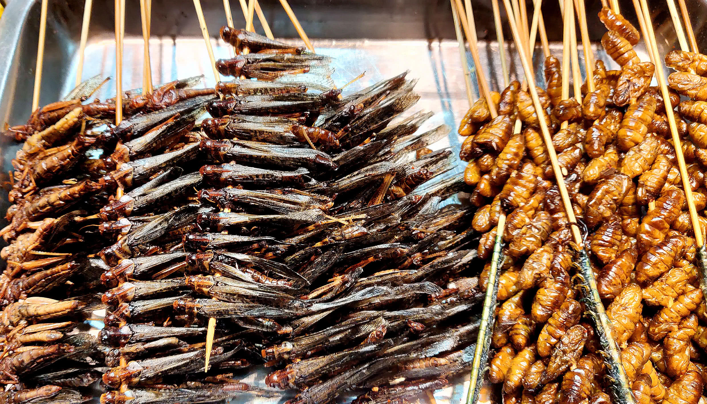
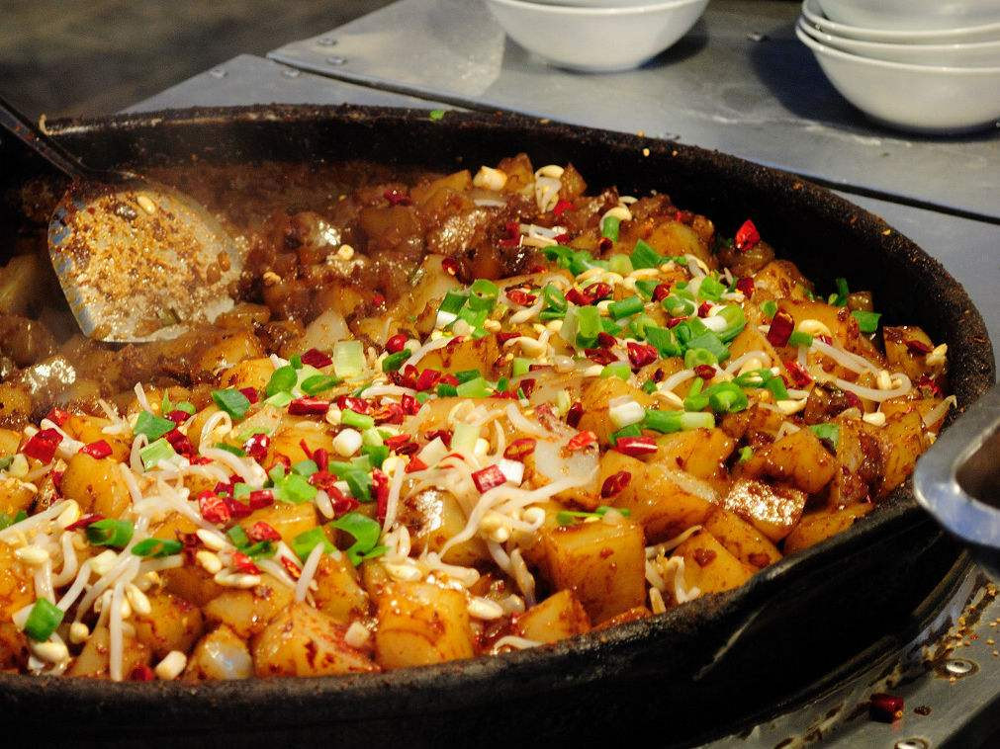
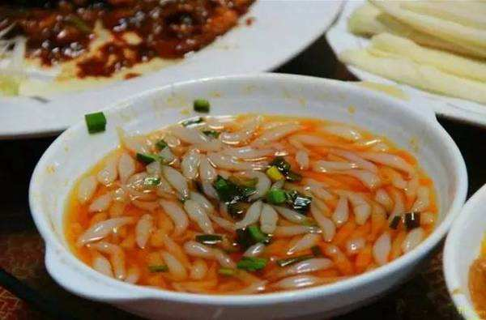

我的家乡—开封
Sharer:刘斌
开封,(古称老丘、大梁、陈留、汴州、东京、汴京、汴梁等)
首批国家历史文化名城、中国五大古都之一、著名的八朝古都。
开封具有“文物遗存丰富、城市格局悠久、古城风貌浓郁、北方水城独特”四大特色
开封是清明上河图的创作地，有着“琪树明霞五凤楼，夷门自古帝王州”、“八荒争凑，万国咸通”、“汴京富丽天下无”、“东京梦华”的美誉。
Part 1 美食
1.夜市
- 鼓楼夜市
- 西司夜市
- 武夷夜市
- 小宋城夜市
- 老河大夜市
- 劳动路夜市
- 北道门夜市



